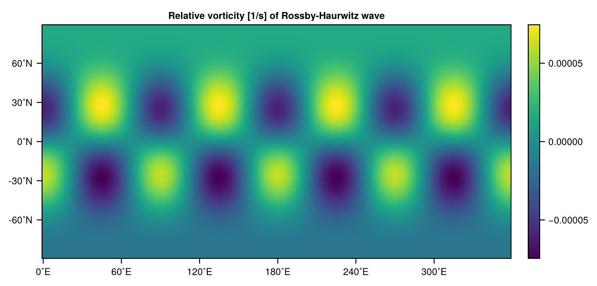
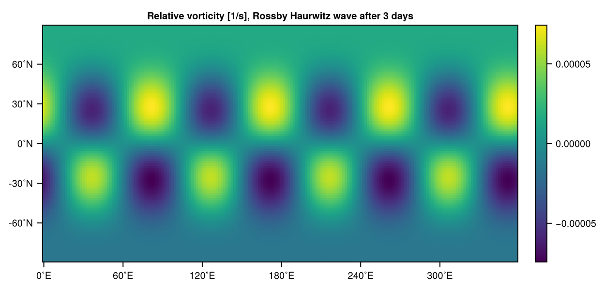
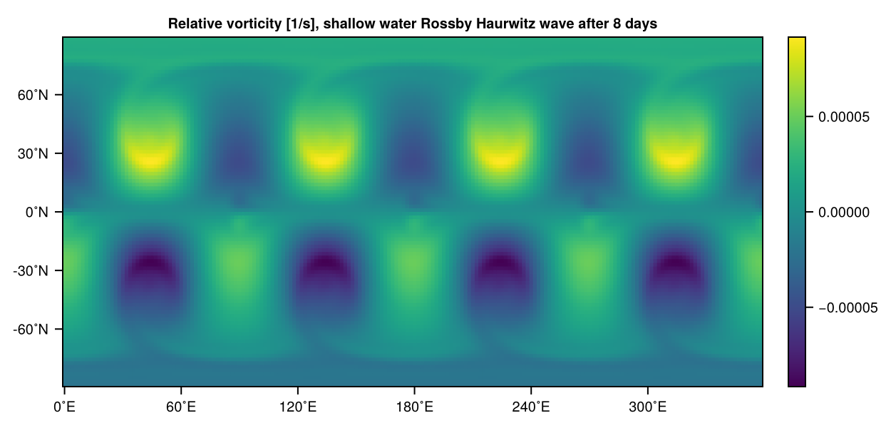
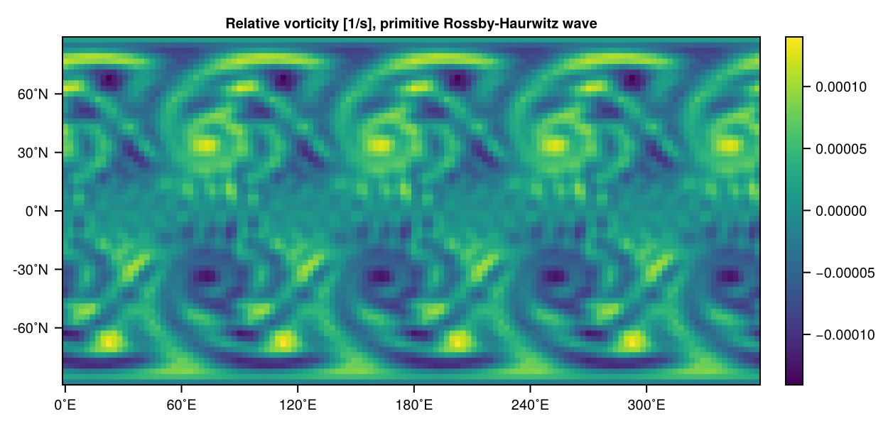

Initial conditions
The following showcases some examples of how to set the initial conditions for the prognostic variables in SpeedyWeather.jl. In essence there are three ways to do this
- Change the arrays in
simulation.prognostic_variables - Use the
set!function - Set the
initial_conditionscomponent of a model
where 1 is a rather low-level and largely requires you to directly set the complex coefficients of the spherical harmonics (advanced!). So the set! function builds a convenient interface around 1 such that you don't have to know about details of grid or spectral space. 3 then collects method 1 or 2 (or a combination of both) into a single struct to "save" some initial conditions for one or several variables. This lets you use predefined (inside SpeedyWeather or externally) initial conditions as easy as initial_conditions = RossbyHaurwitzWave(). Let us illustrate this with some examples where we will refer back those methods simply as 1, 2, 3.
Rossby-Haurwitz wave in a BarotropicModel
We define a BarotropicModel of some resolution but keep all its components as default
using SpeedyWeather
spectral_grid = SpectralGrid(trunc=63, nlayers=1)
model = BarotropicModel(spectral_grid)
simulation = initialize!(model)Simulation{BarotropicModel}
├ prognostic_variables::PrognosticVariables{...}
├ diagnostic_variables::DiagnosticVariables{...}
└ model::BarotropicModel{...}Now simulation.prognostic_variables contains already some initial conditions as defined by model.initial_conditions (that's method 3). Regardless of what those are, we can still mutate them before starting a simulation, but if you (re-)initialize the model, the initial conditions will be set back to what is defined in model.initial_conditions. We will illustrate the set! function now that conveniently lets you (re)set the current state of the prognostic variables:
The Rossby-Haurwitz wave[Williamson92] is defined as an initial condition for vorticity $\zeta$ (which is the sole prognostic variable in the barotropic vorticity model) as
\[ζ(λ, θ) = 2ω*\sin(θ) - K*\sin(θ)*\cos(θ)^m*(m^2 + 3m + 2)*\cos(m*λ)\]
with longitude $\lambda$ and latitude $\theta$. The parameters are zonal wavenumber (order) $m = 4$, frequencies $\omega = 7.848e-6s^{-1}, K = 7.848e-6s^{-1}$. Now setting these initial conditions is as simple as
m = 4
ω = 7.848e-6
K = 7.848e-6
ζ(λ, θ, σ) = 2ω*sind(θ) - K*sind(θ)*cosd(θ)^m*(m^2 + 3m + 2)*cosd(m*λ)
set!(simulation, vor=ζ)with only two difference from the mathematical notation. (1) SpeedyWeather's coordinates are in degrees, so we replaced $\sin, \cos$ with sind and cosd; and (2) To generalise to vertical coordinates, the function ζ(λ, θ, σ) takes exactly three arguments, with σ denoting the vertical Sigma coordinates. This is important so that we can use the same definition of initial conditions for the 2D barotropic vorticity model also for the 3D primitive equations.
One may filter out low values of spectral vorticity with some cut-off amplitude $c = 10^{-10}$, just to illustrate how you would do this (example for method 1)
c = 1e-10 # cut-off amplitude
# 1 = first leapfrog timestep of spectral vorticity
vor = simulation.prognostic_variables.vor[1]
low_values = abs.(vor) .< c
vor[low_values] .= 0which is just treating vor as an array of something and tweaking the values within!
Let us illustrate these initial conditions. set! will set the initial conditions in spectral space, taking care of the transform from the equation defined in grid coordinates. So to show vorticity again in grid space we transform back
# [1] for first leapfrog time step, [:, 1] for all values on first layer
vor = simulation.prognostic_variables.vor[1][:, 1]
vor_grid = transform(vor)
using CairoMakie
heatmap(vor_grid, title="Relative vorticity [1/s] of Rossby-Haurwitz wave")
That's the Rossby-Haurwitz wave! This wave is supposed to travel (without changing its shape) eastward around the globe, so let us run a simulation for some days
run!(simulation, period=Day(3))
# a running simulation always transforms spectral variables
# so we don't have to do the transform manually but just pull
# layer 1 (there's only 1) from the diagnostic variables
vor = simulation.diagnostic_variables.grid.vor_grid[:, 1]
heatmap(vor, title="Relative vorticity [1/s], Rossby Haurwitz wave after 3 days")
Looks like before, but shifted eastward! That's the Rossby-Haurwitz wave. The set! function accepts not just a function as outlined above, but also scalars, like set!(simulation, div=0) (which is always the case in the BarotropicModel) or grids, or LowerTriangularArrays representing variables in the spectral space. See ?set!, the set! docstring for more details.
Rossby-Haurwitz wave in a ShallowWater model
For the shallow water model Williamson et al., 1992[Williamson92] also give initial conditions for the prognostic variable height $h = h_0 + \eta$ (equivalent to geopotential). The layer thickness is $h_0$ and $\eta$ is the interface displacement of that layer. SpeedyWeather however, uses as prognostic variable $\eta$ for which the initial conditions are
\[\begin{align} η(λ, θ) &= \frac{R^2}{g} \left( A(θ) + B(θ) \cos(mλ) + C(θ) \cos(2mλ) \right), \\ A(θ) &= \frac{ω(2Ω + ω)}{2}\cos(θ)^2 + \frac{1}{4}K^2\cos(θ)^{2m}\left((m+1)\cos(θ)^2 + (2m^2 - m - 2) - \frac{2m^2}{\cos(θ)^2}\right), \\ B(θ) &= \frac{2(Ω + ω)K}{(m+1)(m+2)} \cos(θ)^m\left((m^2 + 2m + 2) - (m+1)^2\cos(θ)^2\right), \\ C(θ) &= \frac{1}{4}K^2 \cos(θ)^{2m}\left((m+1)\cos(θ)^2 - (m + 2)\right). \end{align}\]
Where $R$ is the radius of the planet on which we consider the Rossby-Haurwitz wave, this value can be found in model.spectral_grid.radius and $Ω$ and $g$ are the rotation and the gravity constant of the planet, which can be found in model.planet.rotation and model.planet.gravity.
The interface displacement $\eta$ in SpeedyWeather's ShallowWaterModel is stored in the variable pres in analogy to the actual pressure in the PrimitiveEquation model. So we can set $\eta$ using set!(simulation, pres=η) for an appropriate implementation of the above equations, similar to how ζ(λ, θ, σ) = is defined above. However, we also already defined RossbyHaurwitzWave to do exactly that. With the following we can do a test run of the Rossby-Haurwitz wave in the shallow water model without any influences from orography.
spectral_grid = SpectralGrid(trunc=63, nlayers=1)
initial_conditions = RossbyHaurwitzWave()
orography = NoOrography(spectral_grid)
model = ShallowWaterModel(; spectral_grid, initial_conditions, orography)
simulation = initialize!(model)
run!(simulation, period=Day(8))
vor = simulation.diagnostic_variables.grid.vor_grid[:, 1]
heatmap(vor, title="Relative vorticity [1/s], shallow water Rossby Haurwitz wave after 8 days")There is a noticable difference from the result in the barotropic model, where the wave moves around the globe keeping its shape. Here, it deforms around the poles and the vorticity patches develop an internal structure.

Rossby-Haurwitz wave in primitive equations
You can use set! or the predefined RossbyHaurwitzWave also in other models. For the BarotropicModel or the PrimitiveDryModel (or Wet) the definition for $\eta$ is skipped. The barotropic model does not have a pressure variable, the primitive equation model uses the logarithm of surface pressure, which is incompatible with $\eta$ being defined as an interface displacement. So here, the RossbyHaurwitzWave only includes relative vorticity in the initial conditions.
The following shows how you can use RossbyHaurwitzWave in a PrimitiveDryModel (or Wet) but you probably also want to set initial conditions for temperature and pressure to not start at zero Kelvin and zero pressure. Also no orography, and let's switch off all physics parameterizations with physics=false.
spectral_grid = SpectralGrid(trunc=42, nlayers=8)
initial_conditions = InitialConditions(
vordiv=RossbyHaurwitzWave(),
temp=JablonowskiTemperature(),
pres=PressureOnOrography())
orography = NoOrography(spectral_grid)
model = PrimitiveDryModel(spectral_grid; initial_conditions, orography, physics=false)
simulation = initialize!(model)
run!(simulation, period=Day(5))Note that we chose a lower resolution here (T42) as we are simulating 8 vertical layers now too. Let us visualise the surface vorticity ([:, 8] is the lowermost layer)
vor = simulation.diagnostic_variables.grid.vor_grid[:, 8]
heatmap(vor, title="Relative vorticity [1/s], primitive Rossby-Haurwitz wave")
As you can see the actual Rossby-Haurwitz wave is not as stable anymore (because those initial conditions are not a stable solution of the primitive equations) and so the 3-day integration looks already different from the barotropic model!
References
- Williamson92DL Williamson, JB Drake, JJ Hack, R Jakob, PN Swarztrauber, 1992. A standard test set for numerical approximations to the shallow water equations in spherical geometry, Journal of Computational Physics, 102, 1, DOI: 10.1016/S0021-9991(05)80016-6